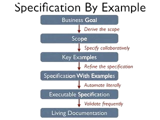

Specification by Example on tarkvaraarenduse meetod, mis keskendub rakenduse nõuete kirjeldamisele praktiliste näidete ja testide abil. See meetod rõhutab tihedat koostööd ärimeeskonna ja arendusmeeskonna vahel ning aitab tagada rakenduse vastavust ärinõuetele.
Specification by Example protsess algab nõuete kirjeldamisest praktiliste näidete kaudu, mis illustreerivad erinevaid kasutusstsenaariume ja ootusi rakendusele. Need näited serveerivad ka testimise aluseks olevate spetsifikatsioonidena.
Üks Specification by Example olulisemaid eeliseid on parem arusaamine ja kommunikatsioon ärinõuetest kogu meeskonna vahel. Praktiliste näidete abil saavad kõik osapooled paremini aru sellest, mida rakendus peaks tegema ja kuidas seda testida.
Lisaks aitab Specification by Example vähendada vigu ja tõrkeid, kuna testimine toimub juba varajases faasis ning tagasiside antakse kohe. See võimaldab arendusmeeskonnal kiiresti reageerida ja vältida probleemide kordumist.
Lõpuks, Specification by Example soodustab ka iteratiivset arengut, kus rakenduse nõuded ja testid täpsustatakse ja täiustatakse vastavalt muutuvatele äri vajadustele ja kasutajate tagasisidele.